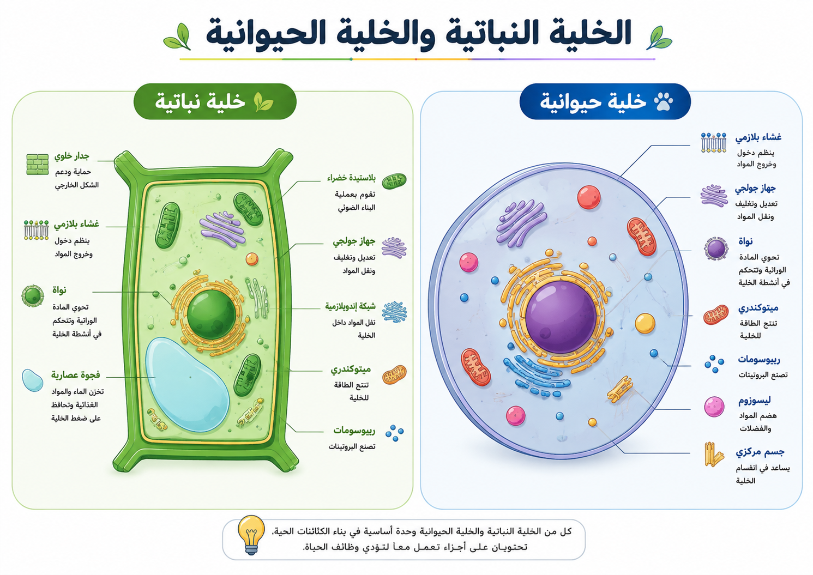
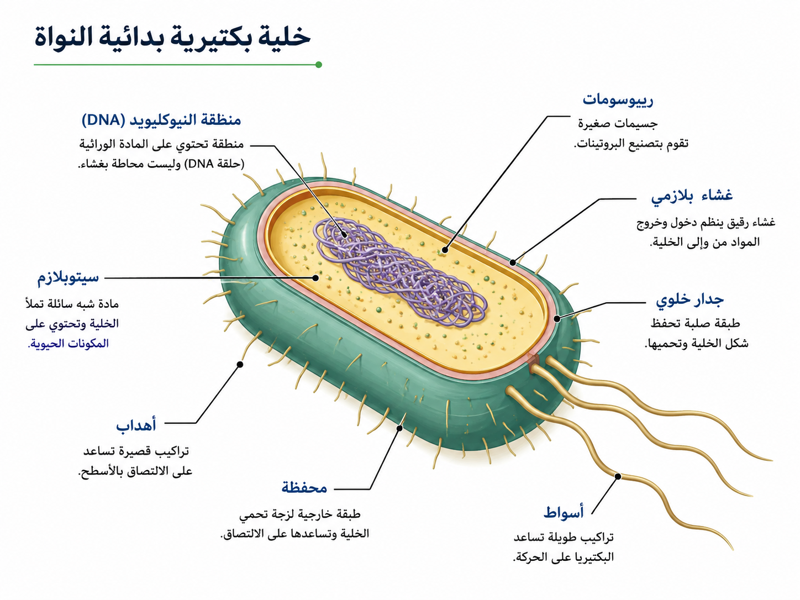
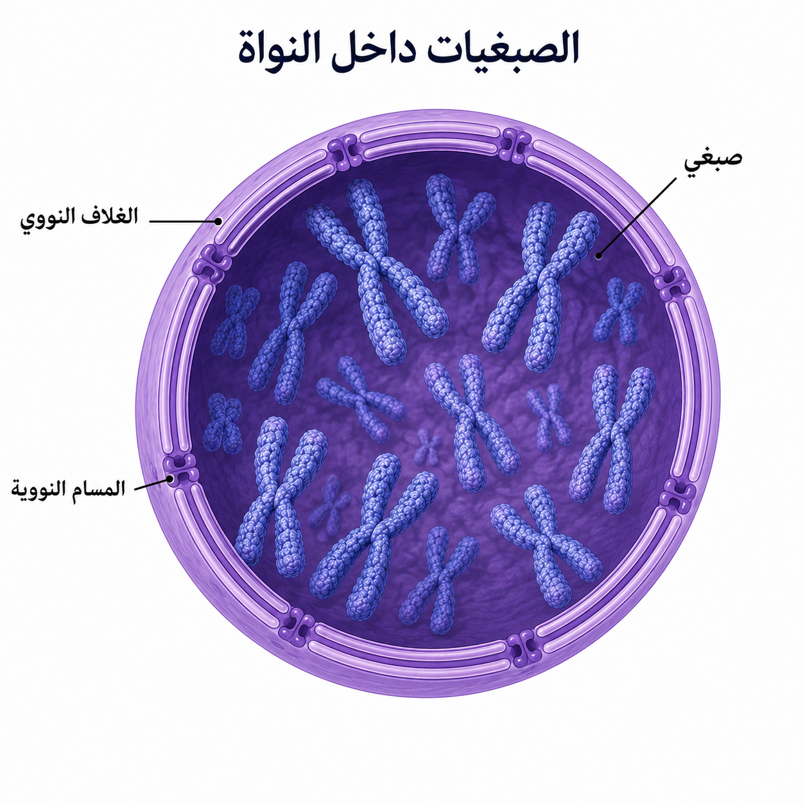
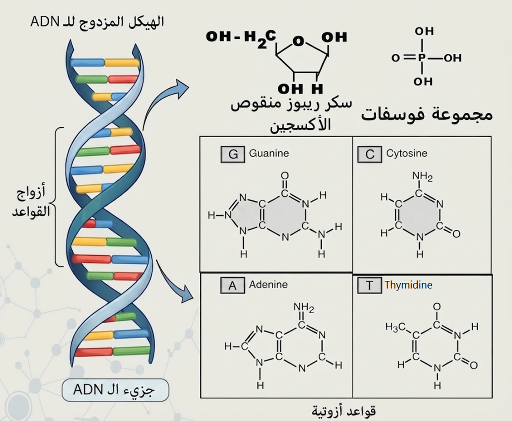
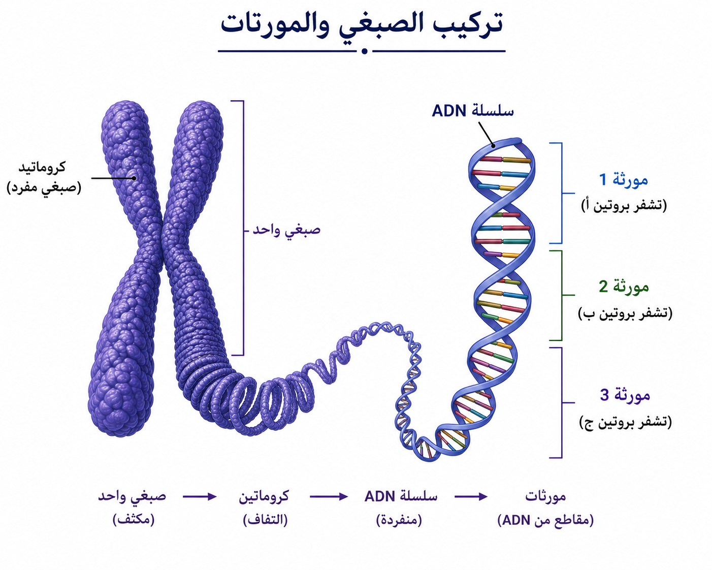
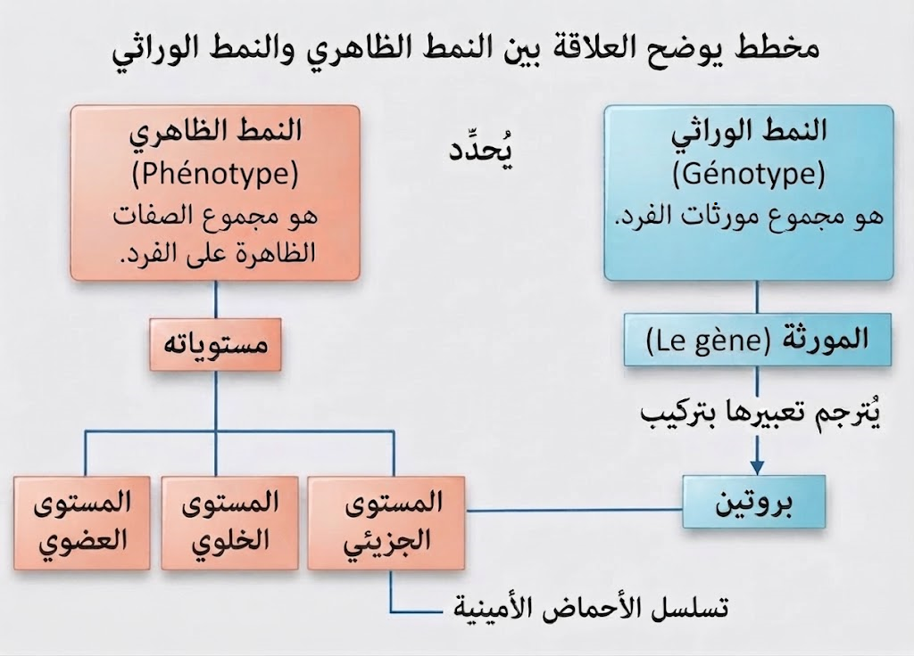

الخلية الحيوانية، النباتية، وبدائية النواة
المحطة 1 من 4أ. العضيات التي تميز الخلية النباتية
تنفرد الخلية النباتية بوجود تراكيب تعطيها الصلابة والقدرة على صنع الغذاء:
- الجدار الهيكلي (السليلوزي): غلاف خارجي سميك وصلب يحيط بالغشاء الهيولي ليحمي الخلية ويمنحها شكلاً ثابتاً.
- الفجوة العصارية الضخمة: كيس مركزي كبير يملأ معظم حجم الخلية ويخزن الماء والمغذيات.
- الصانعات الخضراء: عضيات مسؤولة عن التقاط طاقة الشمس وإجراء التركيب الضوئي.
ب. العضيات التي تميز الخلية الحيوانية
تتميز الخلية الحيوانية بمرونتها وغياب الجدار الصلب:
- الغشاء الهيولي المرن: غشاء رقيق ومرن يحيط بالهيولى ويسمح بتغير شكل الخلية وحركتها وتنظيم التبادل.
- الجسيمات المركزية (Centrioles): تساعد في تنظيم وتوجيه خيوط المغزل أثناء انقسام الخلية الحيوانية.
- الجسيمات الحالة (Lysosomes): حويصلات غنية بالأنزيمات الهاضمة لتنظيف الخلية وتحليل الفضلات.
ج. العضيات المشتركة بين الخلية النباتية والحيوانية (الحقيقية)
عضيات أساسية تتواجد في نوعي الخلايا للقيام بالوظائف الحيوية:
- الشبكة الهيولية الداخلية المحببة (REG): مغطاة بالريبوزومات وتعتبر مصنع تركيب البروتينات.
- الشبكة الهيولية الداخلية الملساء (REL): تخلو من الريبوزومات وتركب الدهون وتزيل السموم.
- جهاز جولجي: محطة الاستقبال وتعديل وتغليف البروتينات.
- الميتوكوندريا: بيت الطاقة ومقر التنفس الخلوي وإنتاج (ATP).
- الريبوزومات الحرة: حبيبات مسؤولة مباشرة عن تصنيع البروتينات داخل الهيولى.

د. الخلية بدائية النواة (مثل البكتيريا)
خلايا بسيطة جداً تخلو من النواة الحقيقية ومن العضيات المغلفة:
- الصبغي البكتيري (ADN حلقي حر): توجد المادة الوراثية مباشرة في الهيولى بدون غلاف نووي.
- الريبوزومات البدائية: الوحيدة الموجودة لتركيب البروتينات.
- الجدار الخارجي: غلاف بكتيري يمنح الحماية.

أ. الصبغيات (الكروموسومات)
تُعرّف بأنها الهياكل الحاملة للبرنامج الوراثي للكائن الحي:
- المظهر البنيوي: تراكيب خيطية متكاثفة ومنظمة بدقة تظهر بوضوح داخل النواة خلال مراحل انقسام الخلية.
- الدور الوظيفي: تمثل الدعامة الأساسية التي تنقل الصفات الوراثية بانتظام من الخلية الأم إلى الخلايا البنت.

ب. جزيء الـ ADN (الحمض النووي الريبي منقوص الأكسجين)
هو الجزيء الكيميائي المسؤول عن تخزين ونقل المعلومة الوراثية:
- البنية الفراغية: يتألف من سلسلتين متلتفتين على شكل حلزون مزدوج متعاكس الاتجاه.
- الوحدة البنائية (النيكليوتيدة): تتكون كل سلسلة من تتابع وحدات صغرى تدعى النيكليوتيدات، والتي تتألف من (حمض الفوسفوريك + سكر خماسي + قاعدة أزوتية من بين الأربع: A, T, G, C).
- مبدأ التكامل: ترتبط القواعد الأزوتية فيما بينها وفق قواعد تكامل محددة (A مع T) و(G مع C) لضمان استقرار ونقل الشفرة بدقة.

ج. المورثة (الجين)
هي الوحدة الوظيفية للمعلومة الوراثية:
- التعريف الدقيق: عبارة عن تسلسل محدد ومعين من النيكليوتيدات على جزيء الـ ADN.
- الأهمية البيولوجية: تحمل الشيفرة الوراثية الخاصة بتصنيع بروتين معين، والذي ينعكس بدوره على ظهور صفة وراثية محددة.

د. الأليل
هو أحد الأشكال الممكنة والمتباينة لنفس المورثة:
- المفهوم العلمي: تفرّع أو نسخة بديلة لذات المورثة على مستوى التسلسل النيكليوتيدي.
- النتيجة الظاهرة: الاختلاف الطفيف في ترتيب النيكليوتيدات بين الأليلات هو السبب الأساسي لتنوع الصفات وتعدد الأنماط الظاهرة بين الكائنات الحية.
أ. النمط الوراثي (Genotype)
هو مجموع المورثات والأليلات التي يمتلكها الفرد في خلاياه، ويمثل المخطط البنائي أو الشيفرة الكامنة داخل جزيئات الـ ADN والتي تحدد الإمكانيات البيولوجية للفرد.
ب. النمط الظاهري (Phenotype)
هو مجموع الصفات المرئية أو القابلة للقياس الناتجة عن تعبير النمط الوراثي وتأثير العوامل البيئية.
يظهر على ثلاثة مستويات أساسية:
- المستوى العضوي: الصفات المرئية الظاهرة للعيان (مثل لون العينين، شكل الزهرة، أو الطول).
- المستوى الخلوي: الصفات المجهرية للخلية (مثل شكل خلايا الدم أو بنيتها).
- المستوى الجزيئي: طبيعة ونوع البروتينات المركبة داخل الخلية (مثل نوع الخضاب الدموي أو الأنزيمات).
القاعدة الأساسية: النمط الظاهري = النمط الوراثي + تأثير العوامل البيئية.

أ. تعريف الطفرة
هي تغيرات فجائية، عشوائية، وثابتة في تتابع النيكليوتيدات (القواعد الأزوتية) لجزيء الـ ADN.
ب. الأنواع الجزيئية للطفرات
- طفرة الاستبدال: استبدال قاعدة أزوتية بأخرى (صامتة أو تؤثر على حمض أميني).
- طفرة الحذف: ضياع قاعدة أو مقطع، مما يؤدي لاختلال إطار القراءة وإنتاج بروتين غير وظيفي.
- طفرة الإضافة (الإدراج): إدخال قاعدة جديدة وتماثل الحذف في تأثيرها المدمر على إطار القراءة.
ج. تأثيرات وأهمية الطفرات
- المصدر الرئيسي للتنوع: المسبب الأساسي لتنوع الكائنات الحية وتطورها.
- طبيعة التأثير: قد تكون ضارة، محايدة، أو مفيدة تزيد من قدرة التكيف.